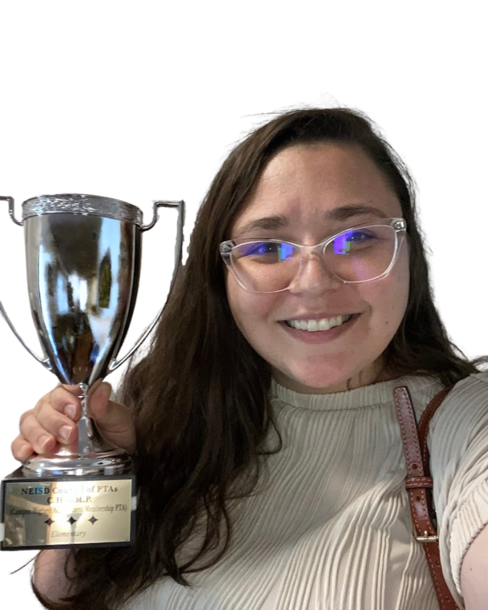
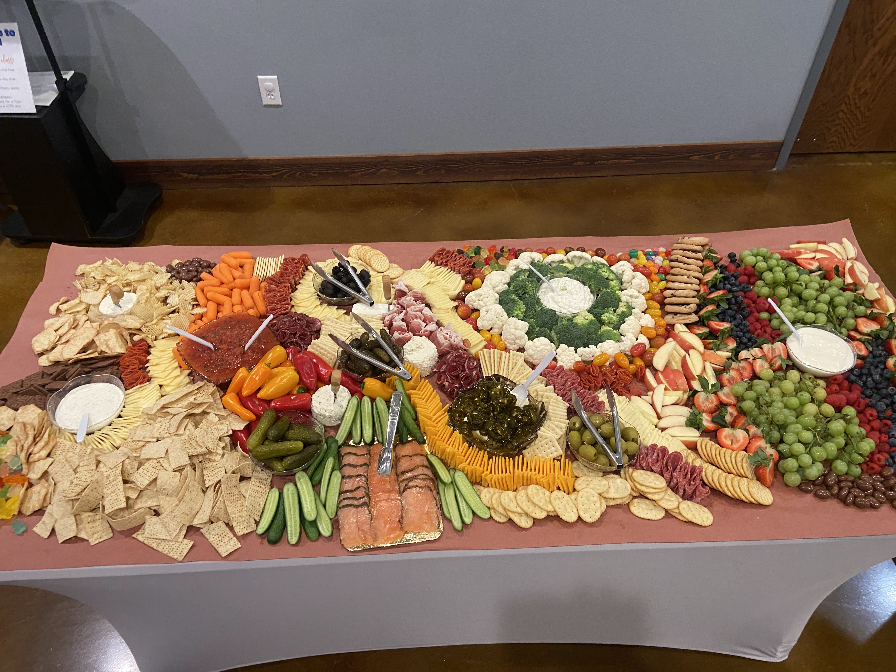

I'm a non-traditional Junior in WGU Batchelor's of Science in Computer Science program.
I currently hold leadership roles in several volunteer organizations while transitioning
from being a stay-at-home-mom to becomming a software engineer.
I am currently located in San Antonio, Texas and
willing to relocate for the right opportunity.
I am interested in aligning my passion for programming
with my drive of continuous learning and leadership skillset to collaborate with
my team to create programs improve both the lives of our
customers and our organization.
Let's connect!
About Me
Skills
Frontend
HTML
CSS
JavaScript
Backend
Java
C++
SQL
A bit about me
My natural inclination to lead, connect, and solve problems is key
to my success. I thrive on hearing user stories and understanding
their needs, which helps me create meaningful connections between
stakeholders, teams, and the product vision. My passion for constant
improvement drives me to optimize processes, ensuring each product
iteration is better than the last. Whether it's gathering insights,
refining a roadmap, or aligning cross-functional teams, I approach
every challenge with creativity, curiosity, and a commitment to
leaving things better than I found them. My love for detail (like
glitter) reflects a keen eye for ensuring every product experience
feels well-crafted and polished!
Recent Work Experience
temporary placeholder photo
Section President - Society of Women Engineers at WGU
2024 - Current
As a founding member and president of our SWE section, I have played
a key role in shaping the group’s direction, offering ideas and
receiving valuable feedback from WGU Faculty Mentors. I’ve focused
on strategic membership growth and building connections in a largely
unconnected university environment.
In my leadership role, I organize professional development workshops,
networking events, and mentorship programs that connect students with
industry professionals. I also manage our section’s budget, secure
sponsorships, and lead fundraising efforts. Through partnerships with
university departments and national SWE chapters, I advocate for
diversity and inclusion, while representing our section at regional and
national conferences. My efforts have helped raise our chapter’s
visibility and significantly grow membership.

Our PTA achieved an award for the most membership growth in the district in spring of 2024.
PTA Vice President
2023 - Current
As Vice President of the PTA, I’ve taken an active role in building community engagement,
working closely with staff, parents, and local organizations. By developing strategic
outreach initiatives, I helped grow membership by 120% within a month and expanded our
volunteer team from 3 to over 35 people that consistently attend.
In my leadership role, I plan large-scale events, manage budgets, and oversee communications
through newsletters, social media, and email campaigns. I also lead fundraising efforts and
coordinate volunteer activities for events like carnivals and family nights. My efforts have
strengthened our school’s community and increased overall participation.

Grazing table I designed and put together for a district meeting.
Catering
2022 - Current
As a Catering Coordinator, I manage all aspects of event planning,
from initial request meetings to execution, ensuring a seamless and
high-quality experience. I coordinate with leadership to understand
their needs and preferences, creating a customized catering plan and
menu.
I work closely with other volunteers and vendors to ensure
timely delivery and presentation, while overseeing logistics
such as venue setup, staffing, and equipment needs. I am
responsible for managing budgets, negotiating contracts,
and securing cost-effective solutions to meet leadership expectations.
Through careful planning and attention to detail, I consistently
deliver successful events, maintaining a strong satisfaction
rate and building long-term relationships that lead to long
term relationships.


.png)